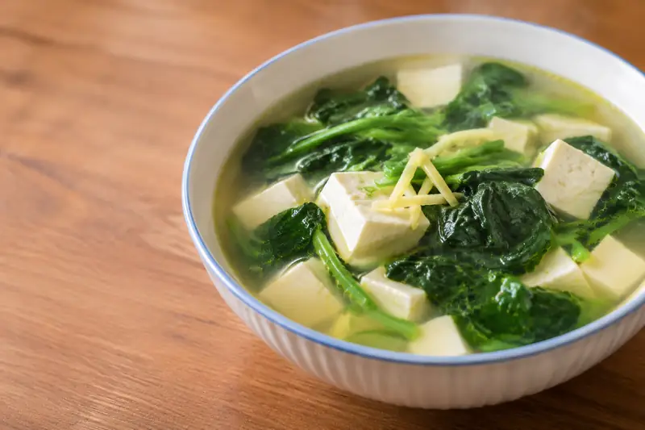

Soup汤 · Chinese home-style家常
Spinach and Tofu Soup菠菜豆腐汤
A clear soup in under 15 minutes that balances any rich main dish. Blanching the spinach first keeps the soup from turning bitter or dark, and small cubes of soft tofu melt in the mouth.十几分钟的一碗清汤，配任何重口味的主菜都合适。菠菜先焯水再下锅，汤不发涩不发黑；嫩豆腐切小块，入口即化。

Ingredients食材
- Soft / silken tofu嫩豆腐 300 g · 1 box soft tofu (about 300 g), cut into small cubes嫩豆腐 1 盒（约 300 克），切小方块
- Spinach菠菜 200 g · 200 g spinach菠菜 200 克
- Ginger姜 5 g · 2 slices2 片
- Canola oil菜籽油 7 g · 1/2 tbsp半汤匙
- Salt盐 4 g · about 2/3 tsp约 2/3 茶匙
- Black pepper黑胡椒 0.3 g · a pinch (white pepper is traditional)少许（有白胡椒更好）
- Sesame oil香油(芝麻油) 4 g · 1 tsp1 茶匙
- Green onions大葱/小葱 5 g · a little chopped green onion葱花少许
Weights are as bought, before trimming or peeling. Costco pack sizes and availability vary; see each ingredient page.重量为买回来的原重（去皮去骨之前）。Costco 规格与有无随时变化，点食材名看详情。
Method做法
- Wash the spinach and cut it into 5 cm lengths.菠菜洗净，切成 5 厘米长的段。
- Blanch the spinach in boiling water for 30 seconds, then lift it out and drain.烧一锅开水，菠菜焯 30 秒，捞出沥干。
- Warm the oil in a soup pot and fry the ginger gently for 30 seconds.汤锅里放油，小火煸姜片 30 秒。
- Add 900 mL water and bring to a boil.加 900 mL 水烧开。
- Add the tofu and simmer gently for 3 minutes.放入豆腐块，小火煮 3 分钟。
- Add the spinach, salt and pepper and cook 1 minute more.放菠菜、盐和胡椒，再煮 1 分钟。
- Turn off the heat and finish with the sesame oil and green onion.关火，淋香油、撒葱花。
Keys to success成功要点
- Blanching removes the spinach's astringency and keeps the broth clear.焯水能去掉菠菜的涩味，汤也不会发绿发黑。
- Do not stir hard once the soft tofu is in; nudge it gently.嫩豆腐下锅后不要用勺子大力搅，轻轻推一下就好。
- Keep it light: salt at the end, tasting first.汤要清淡，盐最后放，先尝一口再补。
Common problems常见失败与补救
- The soup tastes bitter汤发苦发涩
The spinach was not blanched; give it 30 seconds in boiling water first.菠菜没焯水；下次焯 30 秒再下锅。 - The tofu broke into crumbs豆腐全碎了
Too much heat or stirring; simmer gently and nudge it no more than twice.火太大或搅太多；豆腐下锅后小火，最多轻推两下。
Watch it done视频参考
A father makes spinach tofu soup on an English-language channel; ten minutes, about 120,000 views, an unhurried pace.英文频道里父亲做菠菜豆腐汤，10 分钟，约 12 万次观看，讲得慢、适合新手。
A Chinese-language spinach tofu soup in three minutes; the title stresses getting one step right.中文菠菜豆腐汤，3 分钟；标题提到「做对一个步骤」，就是先处理菠菜。
Videos load only when you tap them (youtube-nocookie). Creators are credited; we do not host their videos.点了才加载视频（youtube-nocookie）。署名原作者，本站不托管视频。
Nutrition营养
| Energy热量 | 100 kcal |
| Protein蛋白质 | 6.2 g |
| Fat脂肪 | 6.6 g |
| of which saturated其中饱和脂肪 | 0.8 g |
| Carbohydrate碳水化合物 | 5.1 g |
| Fibre膳食纤维 | 1.3 g |
| Sodium钠 | 560 mg |
Moderate sodium钠中等 Sodium tiers: under 345 mg lower, 345-689 mg moderate, 690 mg and above high (this site's tiers; 15% of the 2,300 mg daily reference = 345 mg).钠分档：低于 345 mg 较低，345–689 mg 中等，690 mg 及以上偏高（本站分档；345 mg ＝ 每日参考 2300 mg 的 15%）。
Computed from the Canadian Nutrient File (Health Canada) with the weights above; oil and sauces are counted in full. Real dishes differ.按加拿大营养素数据库和上面的重量计算；油和酱汁按全量计入，实际会略低。
Good to know适合 / 需注意
- About 560 mg sodium per serving (about 24% of the daily reference), moderate; keep the other meals light that day.每份钠约 560 mg（约 24% 每日参考），属中等；同一天其他餐尽量清淡。
- Contains allergens: Sesame, Soy.含过敏原：芝麻、大豆。
A very light soup that adds some protein and greens; a good partner for a rich main dish.热量很低的清汤，豆腐和菠菜各添一点蛋白质和蔬菜；适合配口味重的主菜。